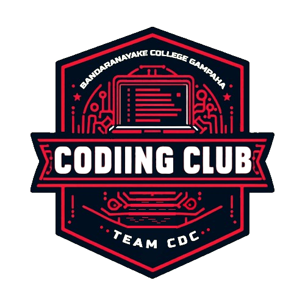

Welcome to the Time Management App!
Time management is the process of planning and organizing how you divide your time between specific activities. Effective time management enables you to work smarter, not harder, ensuring that you achieve your goals and priorities efficiently.
By allocating time to activities based on their importance and urgency, you can enhance productivity, reduce stress, and maintain a healthy work-life balance. Mastering time management involves skills such as setting clear goals, prioritizing tasks, scheduling effectively, and overcoming procrastination. Ultimately, it empowers individuals to make the most of their time and achieve greater success in both personal and professional endeavors.
A timetable, often referred to as a schedule or timetable, is a structured plan that outlines activities or events over a specified period. It serves as a tool for organizing and managing time effectively, whether for personal, academic, or professional purposes.
Timetables typically list tasks, appointments, classes, or other commitments in a chronological order, helping individuals or groups allocate time efficiently. By following a timetable, individuals can ensure they stay on track with their responsibilities, meet deadlines, and maintain a balanced lifestyle. Timetables can be daily, weekly, monthly, or even yearly, depending on the scope and duration of the activities being planned.
A coding club is a community or organization where individuals gather to learn, practice, and collaborate on coding and programming projects. It provides a supportive environment for beginners to advanced coders to enhance their skills, share knowledge, and work on real-world applications. Coding clubs often offer workshops, tutorials, and coding challenges to foster learning and creativity in programming languages such as Python, Java, JavaScript, and more.
Members of coding clubs can include students, professionals, and hobbyists with diverse backgrounds and interests in technology. They typically meet regularly to discuss coding concepts, troubleshoot problems, and collaborate on projects ranging from web development and mobile apps to machine learning and game design. Coding clubs not only promote technical skills but also encourage teamwork, problem-solving, and innovation within the tech community.
